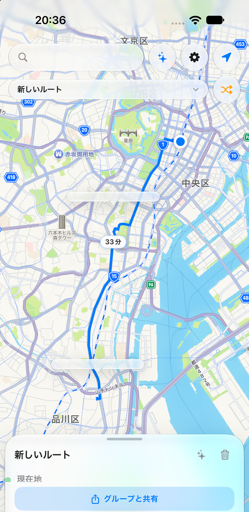

Browse spots on the map
Pins and comment-count chips show nearby spots at a glance, with speech-bubble previews of their comments.

スポットーク — Leave the voice of a place, right on the map.
About
Spotalk Map is a location-based bulletin board — like a note left at a station — where you can attach short comments to spots on a map. Jot down something you noticed, a meetup note, or what a place is like right now.
Each comment can be set to one of three visibility levels: private, group, or public (private by default). With the group feature, you can share spots and comments with just the friends you choose.
How to use
Browse spots on the map
Pins and comment-count chips show nearby spots at a glance, with speech-bubble previews of their comments.
Read and write comments
View a spot's comment list and post your own, switching between private, group, and public visibility.

Share with a group
Add a spot to a group and invite members so your circle can share comments together.

Build a route and share it with a group
Open the view switcher (shows "スポットーク" by default) and tap "New" to start a "New Route." Add stops to see the route and travel time on the map, tap "Route" between two stops to open Apple Maps, and tap "Share with a group" to share the route with your group.

Features
Pricing
The app is free to use. It displays ads via Google AdMob (non-personalized, banner only). We do not collect identifiers used for personalized advertising.